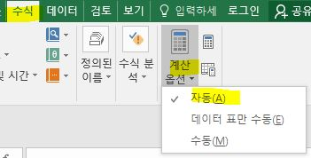

datedif 날짜 계산 (20. 11. 02)
. datedif(A1, A2, "D") /* Y, M, D vs Y+YM+YD */
. 다른 툴과의 호환성을 위해서 만든 것이라고 함, 없는 것처럼 보이더라도 직접 입력하면 작동됨
workday 근무일자 계산 (22. 03. 05)
. workday(날짜, 숫자, 휴입) /* 날짜로부터 근무일이 숫자날짜만큼인 일자 계산 (휴일 별도 관리 가능) */
. wrokday(pcr검사일 + 6일 + 본인감염여부( 3 or 0), 1, 휴일달력) /* 출근 예정일 계산 */
value (21. 11. 23)
. 텍스트를 숫자로 바꾸어짐
date 텍스트를 날짜로 변환 (20. 11. 02)
. date(년, 월, 일)
char vs. code
. char( code('a') + 1 ) --> 'b'
text (원하는 형식으로 데이터 저장)
. text(value, format_text)
. yyyy, mm, dd, hh, mm, ss
. 셀서식 내용 참조하면 좋을 듯
. 드롭다운 목록을 만들고 싶은 셀을 선택
-> [데이터] -> [데이터유효성검사] -> [제한대상] -> [목록] 선택
->[공백무시]와 [드롭다운표시]에 체크 -> [원본]란에 원하는 리스트를 쉼포로 구분하여 입력하고 확인
. 셀영역을 지정하여 처리할 수도 있음
. Ctrl-A - 셀서식 - [보호]탭 - 잠금. 숨김 항목 체크 해제 - 확인
. 수식이 들어 있는 셀 범위 지정 - 우클릭 - 셀서식 - [보호]탑 - 잠금, 숨김 ㅞ크 - 확인
. [도구]-[보호]-[시트보호] '워크시트에서 허용할 내용', 잠긴셀 선택, 잠기지 않은 셀 선택 체크
Tip [시트보호] 대화상자에서 [시트보호 해제암호]항목을 이용하여 암호를 지정하면 [도구]-[보호]-[시트보호해제] 메뉴를 실행할 때 암호를 입력해야 한다.
Tip 셀보호하니깐, 매크로에서 오류남 : 셀보호로 매크로에서 입력한 값 변경이 안됨